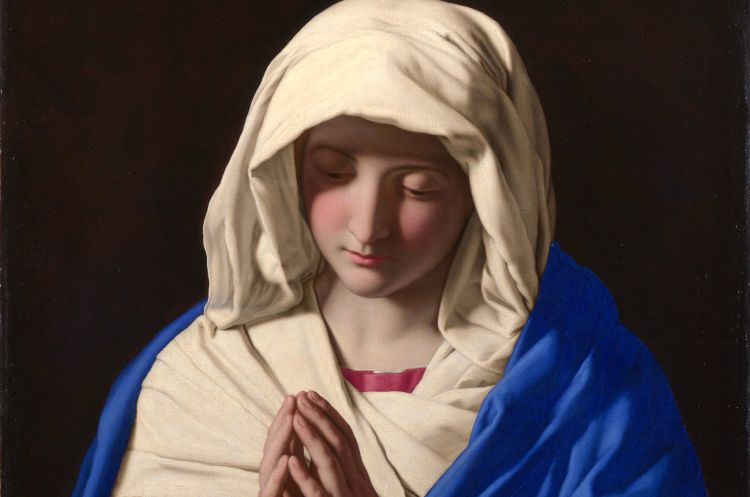
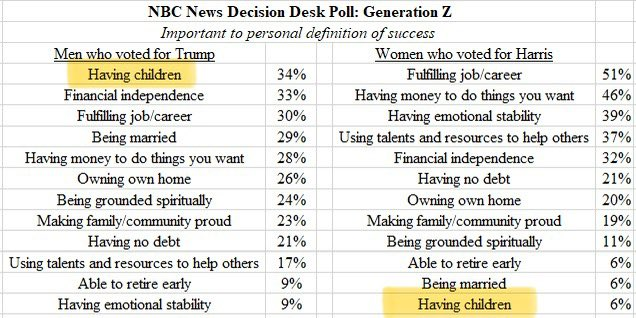

Republished with formatting changes only, and with gratitude, from Fish Eaters.

First please read the page on Saints
before going on to this page!
I will outline Catholic beliefs about Mary before exploring them more
fully:
Mary, as are all who are saved, was saved by the blood of Christ.
She is the greatest of Saints and her prayers for us are efficacious.
She is a fully human creature and not in any way a goddess.
She is the Immaculate Conception who was filled with grace from
her first moments, she is the Ark of the New Covenant and the New
Eve
Mary is the "Theotokos," or the "God-bearer," i.e., the Mother of
God
Mary remained both sinless and a virgin her entire life
Mary was assumed into Heaven by the power of God, where she was crowned Queen of Heaven
James 5:16 tells us that "the effectual fervent prayer of a righteous
man availeth much" -- and who is more righteous than Mary, the woman
chosen by God to bring forth His very Son? As Bishop Fulton Sheen wrote,
"It may be objected: 'Our Lord is enough for me. I have no need of her.'
But He needed her, whether we do or not. God, Who made the sun, also
made the moon. The moon does not take away from the brilliance of the
sun. All its light is reflected from the sun. The Blessed Mother
reflects her Divine Son; without Him, she is nothing. With Him,
she is the Mother of Men." [emphasis mine]
Keep reading to see why Mary is the greatest of all Saints -- graced by
God in a special way, and why imitating her Christian obedience is a
path to holiness...
That Mary was (and, of course, we Catholics believe that she still
is) full of Grace is clearly evident in Luke 1:28, when Gabriel
addressed her as "Full of Grace"! The problem for many non-Catholic
Christians is the idea that she was born that way and that she was
sinless. But Mary had to have been literally filled with Grace
because Christ is her Son -- and He is perfect!. She is more that some
really cool, spiritual woman who acted as a surrogate mother for the
Holy Spirit; she gave to Jesus His humanity in the same way that all
mothers give to their children their humanity. He took from her
His very Flesh and Blood! It was through her that our
Lord "was made of the seed of David according to the flesh" (Romans
1:3). As Ireneus of Lyons asked in his Adversus haereses (ca
A.D. 180), "...why did He come down into her if He were to take nothing
of her?"
All Christians believe in saving grace and in sanctification. This being
so, what is hard to believe about the idea that God sanctified Mary in
her mother's womb, especially given that Mary bore Christ in hers? Can't
the Awesome God Who overshadowed Mary so that she would conceive the Son
be perfectly capable of preparing her from her own mother's womb to be a
pristine vessel for such a glorious task? He created Eve without sin,
would He not create His own Mother without sin, also? St. John the
Baptist was filled with the Holy Ghost even from his mother's womb. His
father, the priest Zecharias was told:
Luke 1:13-15
But the angel said unto him, Fear not, Zacharias: for thy prayer is heard; and thy wife Elisabeth shall bear thee a son, and thou shalt call his name John. And thou shalt have joy and gladness; and many shall rejoice at his birth. For he shall be great in the sight of the Lord, and shall drink neither wine nor strong drink; and he shall be filled with the Holy Ghost, even from his mother's womb.
-- and this is, of course, exactly what happened. In the same Gospel we see how St. John, in the womb of his mother Elisabeth, was filled with the Holy Ghost along with his mother when Mary visited:
Luke 1:41-44
And it came to pass, that, when Elisabeth heard the salutation of Mary, the babe leaped in her womb; and Elisabeth was filled with the Holy Ghost: And she spake out with a loud voice, and said, Blessed art thou among women, and blessed is the fruit of thy womb. And whence is this to me, that the mother of my Lord should come to me? For, lo, as soon as the voice of thy salutation sounded in mine ears, the babe leaped in my womb for joy.
If God can fill St. John with such grace in his mother's womb, why
can't He do the same for Mary? And why wouldn't He?
The Ark of the Covenant in the Old Testament was adorned by two carved
cherubim, symbols of God's glory, and on top of it sat the Mercy Seat,
upon which goat's blood was sprinkled on the Day of Atonement -- the
only day of the year (after Moses) that the High Priest (and the High
Priest alone) could approach it in its Holy of Holies. Most importantly,
the presence of God was over it. Touching this Ark -- just looking into
it -- would kill a man. Powerful and holy indeed was this
sacred vessel! And what did it contain? See Hebrews 9:4:
The Ark of the Covenant
The Ark of the New Covenant, Mary
St. Luke clearly wanted us to see Mary as the New Ark in that, inspired
by God, he parallels many of his verses with those used to describe the
Ark of the Covenant in the Old Testament. Compare, for example, Luke's
words with 2 Samuel 6 below:
2 Samuel 6:2 And David arose, and went with all the
people that were with him from Baale of Judah, to bring up from thence
the ark of God, whose name is called by the name of the LORD of hosts
that dwelleth between the cherubims. Luke 1:39 And Mary
arose in those days, and went into the hill country with haste, into a
city of Juda 2 Samuel 6:9 And David was afraid of the
LORD that day, and said, How shall the ark of the LORD come to me?
Luke 1:43 And whence is this to me, that the mother of
my Lord should come to me? 2 Samuel 6:11 And the ark of
the LORD continued in the house of Obededom the Gittite three months...
Luke 1:56 And Mary abode with her about three months...
2 Samuel 6:16 And as the ark of the LORD came into the
city of David, Michal Saul's daughter looked through a window, and saw
king David leaping and dancing before the LORD [His Presence over the
Ark] Luke 1:41 And it came to pass, that, when
Elisabeth heard the salutation of Mary, the babe leaped in her womb; and
Elisabeth was filled with the Holy Ghost:
In the Old Testament, the Ark of the Covenant, overshadowed by the the
Spirit of God (Exodus 40:38), was the instrument through which God came
to dwell among men; in the New Testament, Mary, overshadowed by the Holy
Spirit (Luke 1:35), is the instrument through which God came to dwell
among men. She is the Ark of the New Covenant.
And here's a biggie: look carefully at Revelation 11:19-12:1. St. John
tells us what he sees in Heaven: "And the temple of God was opened in
heaven, and there was seen in his temple the ark of his testament: and
there were lightnings, and voices, and thunderings, and an earthquake,
and great hail. And there appeared a great wonder in heaven; a woman
clothed with the sun, and the moon under her feet, and upon her head a
crown of twelve stars [this woman, we are told later in chapter 12, is
the one who brought forth the man child who would rule over the nations,
ie, Christ].
Keep in mind, too, that chapter and verse divisions did not exist
until the Middle Ages: what John says he saw is the Ark of the
Covenant -- a woman. Really -- think about this:
there is the Ark of the Covenant, lost for
generations, in the Heavenly Temple! Then come the "special effects" --
lightning! Thunder! The very earth shakes! And
there is the woman who brought forth the man
child who who would rule over the nations... Mary, the pure and holy Ark
of the New Covenant. [Note that the Woman of Revelation 12 is also a
symbol of the Church, which has Mary for Her Mother; there is dual
meaning here!]
Adam and Eve, immaculate from their first moments, prefigure Mary and Jesus, also without original sin from their conceptions -- the only four people immaculate from their first moments, creating a brilliant poetic symmetry in Scripture.1 And as Eve through her disobedience, was the means through whom Adam brought sin into the world, Mary, the New Eve, through her obedience, was the means through whom salvation entered the world when she gave birth to her Son, the New Adam, our Savior. As Ireneus wrote in the 2nd c.:
For the Lord, having been born "the First-begotten of the dead," and receiving into His bosom the ancient fathers, has regenerated them into the life of God, He having been made Himself the beginning of those that live, as Adam became the beginning of those who die. Wherefore also Luke, commencing the genealogy with the Lord, carried it back to Adam, indicating that it was He who regenerated them into the Gospel of life, and not they Him. And thus also it was that the knot of Eve's disobedience was loosed by the obedience of Mary. For what the virgin Eve had bound fast through unbelief, this did the virgin Mary set free through faith.
Revelation 12 speaks of the woman who "brought forth the man child
who was to rule the nations (Christ)," saying, "And the earth helped the
woman, and the earth opened her mouth, and swallowed up the flood which
the dragon cast out of his mouth. And the dragon was wroth with the
woman, and went to make war with the remnant of her seed, which keep the
commandments of God, and have the testimony of Jesus Christ," a direct
allusion to Genesis 3:15, "And I will put enmity between thee and the
woman, and between thy seed and her seed; it ["he" in most translations]
shall bruise thy head, and thou shalt bruise his heel. ..." Read that
slowly, Christian! "I will put enmity between you and the woman!" What
woman? Who is the woman whose "seed" (offspring) saves? Who is this
woman who is mentioned, in the context of Eve's sin, as being one whom
God will have as the enemy of Satan? While "the woman" of Revelation
11-12 is also a type of the Church/Israel, who else could the woman who
brought forth Christ possibly be?
Remember, too, that God didn't "need" Mary, per se, despite
what Bishop Sheen wrote above; Jesus could have spontaneously
incarnated, if He'd chosen to. But in choosing a human creature, He not
only revealed His poetic Genius, He allowed Mary to act as the New Eve,
playing a role in man's redemption as the First Eve played a role in
Man's fall. He "needed" Mary in order for there to be a New Eve and in
order to fulfill the words of the Prophets. Hence the term
"Co-Redemptrix" -- the "co-" meaning "with," not "the
equivalent of." Consider the terms "pilot" and "co-pilot." Are they the
same? Is the co-pilot "the pilot"? Is the co-pilot equal to or
subordinate to the pilot?
The anthropological implications of the reality that Mary is the New Eve are great and go far in showing the esteem in which women should be held. As St. Augustine wrote in Christian Combat:
Our Lord Jesus Christ, however, who came to liberate mankind, in which both males and females are destined to salvation, was not averse to males, for He took the form of a male, nor to females, for of a female He was born. Besides, there is a great mystery here: that just as death comes to us through a woman, Life is born to us through a woman; that the devil, defeated, would be tormented by each nature, feminine and masculine, since he had taken delight in the defection of both.
Mary affirms the status of women and is a beautiful symbol of our inherent, God-given dignity -- but lest the modernist feminists cluck their tongues, it must be remembered that it was through Mary's obedience to God and by the blood of her Son that she was redeemed.
Mother of God
This simple statement of fact should be a "case closed" situation that could be argued with a classic syllogism:
Jesus is God
Mary is the mother of Jesus
Mary is the mother of God
But some people still balk at referring to Mary as God's mother. The
only way they can get around that fact, though, is to do one of the
following:
deny that Christ is God (heresy);
deny that He is both fully human and fully God and that those two
natures are in perfect hypostasis and can't be divided (heresy);
deny that Jesus is the Son of Mary (heresy); or
claim that Jesus was God before His incarnation, but not while He was in the flesh (heresy).
Luke 1:43 tells us of Elisabeth greeting Mary with, "And whence is
this to me, that the mother of my Lord should come to
me?" It's all very simple.
Does this mean she is the Mother of God, the Father? No.
Is she the Mother of God, the Holy Spirit? No.
But she is the Mother of Jesus, Who is God. She is the Mother
of His human nature, not His divine nature -- but these two natures are
now, since the Incarnation, in perfect union and cannot be separated.
Jesus is not a "collection of parts" and "natures"; He is a Person. To
say that Mary can't be the Mother of God because she isn't the Mother of
His divinity is to say that your own mother can't be your mother because
she didn't create your eternal soul. You are a person -- body and soul
-- and your mother is your mother. You wouldn't say, "My mother isn't
really 'my mother'; she's only the mother of my body." It is the same
with Jesus, Who is fully human and fully divine -- Who is
God.
Sinless
Genesis 3:15
And I will put enmity between thee and the woman, and between thy seed and her seed; it shall bruise thy head, and thou shalt bruise his heel.
"I will put enmity between Satan and the woman." Enmity?
Main Entry: en�mi�ty
Pronunciation: 'en-m&-tE
Function: noun
Inflected Form(s): plural -ties
Etymology: Middle English enmite, from Middle French enemit�, from Old French enemist�, from enemi enemy
Date: 13th century
: positive, active, and typically mutual hatred or ill will
synonyms ENMITY, HOSTILITY, ANTIPATHY, ANTAGONISM, ANIMOSITY, RANCOR, ANIMUS mean deep-seated dislike or ill will. ENMITY suggests positive hatred which may be open or concealed <an unspoken enmity>. HOSTILITY suggests an enmity showing itself in attacks or aggression <hostility between the two nations>. ANTIPATHY and ANTAGONISM imply a natural or logical basis for one's hatred or dislike, ANTIPATHY suggesting repugnance, a desire to avoid or reject, and ANTAGONISM suggesting a clash of temperaments leading readily to hostility <a natural antipathy for self-seekers><antagonism between the brothers>. ANIMOSITY suggests intense ill will and vindictiveness that threaten to kindle hostility <animosity that led to revenge>. RANCOR is especially applied to bitter brooding over a wrong <rancor filled every line of his letters>. ANIMUS adds to animosity the implication of strong prejudice <objections devoid of personal animus>
Doesn't sound to me as though the woman and Satan would co-operate
much; they are enemies!
Impossible! What about Romans 3:9-12?
Romans 3 9-12:
What then? are we better than they? No, in no wise: for we have before proved both Jews and Gentiles, that they are all under sin; As it is written, There is none righteous, no, not one: There is none that understandeth, there is none that seeketh after God. They are all gone out of the way, they are together become unprofitable; there is none that doeth good, no, not one.
What about that? Well, that is yet another instance of those who take everything literally except "This IS my body, this IS my blood" reading out of context. First, have 2 month old babies "sinned" (note, that being born in a state of "original sin" is not "personal sin")? Did Jesus sin? Are the extremely mentally retarded responsible for "sin"? What about Luke 1:6 which speaks of St. John the Baptist's parents, the priest Zacharias and Elisabeth, who "were both righteous before God, walking in all the commandments and ordinances of the Lord blameless"? Either they were also totally obedient to God, as Mary most certainly is, and are, therefore, sinless (i.e., not guilty of personal sin, though guilty of original sin), or the verse means something else. But what? Well, look at Psalm 14, which is the verse Paul is quoting.
Psalm 14
The fool hath said in his heart, There is no God. They are corrupt, they have done abominable works, there is none that doeth good. The Lord looked down from heaven upon the children of men, to see if there were any that did understand, and seek God. They are all gone aside, they are all together become filthy: there is none that doeth good, no, not one. Have all the workers of iniquity no knowledge? who eat up my people as they eat bread, and call not upon the Lord. There were they in great fear: for God is in the generation of the righteous. Ye have shamed the counsel of the poor, because the Lord is his refuge. Oh that the salvation of Israel were come out of Zion! when the Lord bringeth back the captivity of his people, Jacob shall rejoice, and Israel shall be glad.
Paul is contrasting "they" -- those who do no good, who are filthy,
who are not righteous, who do no good -- not one ---- with God's people
who are righteous.
Catholic belief is that all of us, Mary included, need a Redeemer
because of our fallen nature and that no one can attain Heaven without
His Blood. We are saved from our fallen nature by His grace alone through
faith that worketh in charity. Mary, though, because God knew how she
would use the free will He gave to her, was saved, by His grace, from
having a fallen nature at the moment of her conception. She was redeemed
from her mother's womb, an act planned from Genesis 3 so that she could
act as the New Eve and so that Christ could be born of vessel even more
pure than the Ark of the Covenant. Christ would not have been born from
that which is impure! God knew of Mary's will to serve even before she
was conceived. He knew she would say yes to Him, and He saved her at her
first moment.
Ever-Virgin
Three things in the Bible lead some Protestants to believe that Mary
was not ever-virgin: the reference to Jesus' "brothers", the use of the
word "until" in Matthew 1:25, and the reference to Jesus as Mary's
"firstborn." Let's look at these one at a time.
Jesus' Brothers:
The word "brother" or "brethren" is often used in Scripture for
relationships other than that of those born of the same parents:
Verse
People Involved
Relationship
Genesis 11:26-28,
Genesis 14:14
Lot - Abraham
nephew - uncle
Genesis 29:15
Jacob - Laban
nephew - uncle
1 Chronicles 23:21-22
Children of Kish and Eleazar
cousins
2 Kings 10:13-14
42 "brethren" of King Azariah
kinsmen
Deuteronomy 23:7, Jeremiah 34:9
All Jews
practitioners of the same religion
Matthew 23:8
all who love Christ
members of the Church
John 20:17-18,
Matthew 12:49
Christ - His disciples
Savior - saved
1 Corinthians 15:6
500 witnesses to the resurrected Christ
strangers
This isn't every reference to "brother(s)" or "brethren" in the
Bible, but it's enough to prove that the use of the words "brothers" or
"brethren" doesn't necessarily indicate "blood brothers" at all. This is
true because neither Hebrew nor Aramaic have words for "uncles,"
"nephew," "niece," "step-brother," "step-sister," etc. All were referred
to as "brother" and "sister," which were translated into Greek as
adelphos or adelphe.
Nonetheless, and despite Tradition, there are four people that some
Protestants claim are the blood brothers of Jesus, an idea which comes
from Mark 6:3 which says that Jesus is "the brother of James, and Joses,
and of Jude and Simon." But to find out who the real mother of these
four are, look at the following:
Matthew 27: 55-56 tells us of three women at the Cross: "And many
women were there beholding afar off, which followed Jesus from Galilee,
ministering unto him: Among which was Mary Magdalene, and Mary the
mother of James and Joses, and the mother of Zebedees children."
Mark 15:40 tells us of the three women there, "There were also
women looking on afar off: among whom was Mary Magdalene, and Mary the
mother of James the less and of Joses, and Salome."
John 19:25 is the most inclusive, telling us of four women's presence, "Now there stood by the cross of Jesus his mother, and his mother's sister, Mary the wife of Cleophas, and Mary Magdalene." (Note here the reference to Mary's "sister" who's named Mary!)
Putting all these together, we can cross off Joses and James the Less
as being Jesus' blood brothers because their mother is the wife of
Cleophas.
We can cross Simon off the list because Mark 3:18 tells us he is a
Canaanite, "And Andrew, and Philip, and Bartholomew, and Matthew, and
Thomas, and James the son of Alphaeus, and Thaddaeus, and Simon the
Canaanite..."
Jude, we are told in Jude 1:1, is the "servant of Jesus Christ and the
brother of James."
Crossing just one name off the list is enough to prove the point that
the Hebrew word "brother" means many things (just as the word does in
English today, my "brother or sister in Christ!") and to prove that this
is so even in the very particular context of Mark 6:3.
St. Papias, writing in the first and early second centuries and called
by St. Irenaeus a "hearer of John," refers clearly to all the above
Marys in his letter, a fragment of which survives to this day. He
writes:
Mary the mother of the Lord; Mary the wife of Cleophas or Alphaeus, who was the mother of James the bishop and apostle, and of Simon and Thaddeus, and of one Joseph; Mary Salome, wife of Zebedee, mother of John the evangelist and James; Mary Magdalene. These four are found in the Gospel. James and Judas and Joseph were sons of an aunt of the Lord's. James also and John were sons of another aunt of the Lord's. Mary, mother of James the Less and Joseph, wife of Alphaeus was the sister of Mary the mother of the Lord, whom John names of Cleophas, either from her father or from the family of the clan, or for some other reason. Mary Salome is called Salome either from her husband or her village. Some affirm that she is the same as Mary of Cleophas, because she had two husbands. [read the complete letter fragment here: http://www.newadvent.org/fathers/0125.htm. Will open in new browser window.]
In addition to this, Jesus could well have had step-brothers, as Church Tradition and early Church writings tell us that Joseph was an older man when Mary, a consecrated virgin, was betrothed to him so that he could act as her protector when she got to be of age enough to "defile the Temple" (though she could not, in fact defile the Temple). Please read the Protoevangelium of St. James, dated to ca A.D. 125, which, in chapter 9, clearly states that St. Joseph had other children from a former marriage. Though this document was rejected by the Church as being a part of infallible Scripture, it is very early evidence of the belief, held as possisble from the beginning of the Church, that Jesus had "brothers" because his earthly father, Joseph, had children when he married Mary, a consecrated virgin. Also see the apocryphal document, the Gospel of the Nativity of Mary, yet another early source which proves that many of the earliest Christians believed in Mary's consecrated virginity, that Joseph was an aged man when he married her, and that she was kept free from sin.
Another note on this: when Gabriel tells Mary that she will conceive
a child, she says to him in Luke 1:34, "How shall this be, seeing I know
not a man?" We are told seven verses before that when this happened she
was "a virgin espoused to a man whose name was Joseph." She was already
engaged, knew she was to be married, is visited by an angel who tells
her she will have a Son, and she acts bewildered, as though it's an
impossibility because she "knows not a man." She's not confused that she
will bring forth a Son who "shall be great, and shall be called the Son
of the Highest: and the Lord God shall give unto him the throne of his
father David"; she is confused that she will bring forth a son at all!
She doesn't "get it" because she knows she is a consecrated virgin and
will not "know a man!" She is confused that she will have a baby at
all!
Yet another poser: why, in the name of all that's Holy, would Jesus give
Mary to John to care for if He had all these brothers and sisters
around? John 19:26-27 reads, "When Jesus therefore saw his mother, and
the disciple standing by, whom he loved, He saith unto his mother,
Woman, behold thy son! Then saith He to the disciple, Behold thy mother!
And from that hour that disciple took her unto his own home."
And finally, if Jesus had brothers and sisters, don't you think their
descendants would know it? At least in the first 300 years or so of the
Church? Where were they? Did they speak of "Uncle Jesus" often? I'd
think that if He had all of these brothers, sisters, nieces, and nephews
around, there'd have been some word of it.
Until:
It's argued that Joseph "knew" Mary at some point because Matthew 1:25
reads, "And knew her not till she had brought forth her firstborn
son..." But, once again, language clouds the issue. "Until" is used to
mean "up to that point, and with no intimations that things changed
after that point." Example, 2 Samuel 6:23 reads, "Therefore Michal the
daughter of Saul had no child unto the day of her death." Would
Protestants say she had children after the day of her death because the
use of the word "unto" proves it? What about 1 Samuel 15:35? "And Samuel
came no more to see Saul until the day of his death: nevertheless Samuel
mourned for Saul: and the Lord repented that he had made Saul king over
Israel." I really doubt Samuel and Saul hooked up after his death,
either! 1 Timothy 6:14 says, "That thou keep this commandment without
spot, unrebukable, until the appearing of our Lord Jesus Christ." What?
After that it's going to be one big orgy? I don't think so! And the same
goes for:
And there are more examples. See what Origen (A.D. 185-232)
had to say about the use of the word "until" in his Commentary on the
Gospel of Matthew. In this work, he refutes those who think "that
the promise of the Saviour prescribes a limit of time to their not
tasting of death, namely, that they will not taste of death "until" they
see the Son of man coming in His own kingdom." Read also what St. Jerome (A.D.
340-430) wrote on the same topic.
Firstborn:
Some Protestants say that the use of the word "firstborn" proves that
Mary had other children, but they are simply being ignorant of Jewish
law, Pidyon ha-Ben in particular. Pidyon ha-Ben is the
"Redemption of the Firstborn," who were to have been consecrated to God
and serve as priests and Temple workers. The "firstborn" is the
male child that "opens the womb". If the child that
"opens the womb" is a female child, there is no "firstborn" for the
family because the child that "opened the womb" is not a masculine
child. If no more children are born after the firstborn, the firstborn
still has the status and title of "firstborn." The relevant Torah verses
are:
Exodus 13:2
Sanctify unto me all the firstborn, whatsoever openeth the womb among the children of Israel, both of man and of beast: it is mine.
Exodus 13:14-15
And it shall be when thy son asketh thee in time to come, saying, What is this? that thou shalt say unto him, By strength of hand the LORD brought us out from Egypt, from the house of bondage: And it came to pass, when Pharaoh would hardly let us go, that the LORD slew all the firstborn in the land of Egypt, both the firstborn of man, and the firstborn of beast: therefore I sacrifice to the LORD all that openeth the matrix, being males; but all the firstborn of my children I redeem.
Numbers 18:15
Every thing that openeth the matrix in all flesh, which they bring unto the LORD, whether it be of men or beasts, shall be thine: nevertheless the firstborn of man shalt thou surely redeem, and the firstling of unclean beasts shalt thou redeem.
Though the "Golden Calf" incident left the Temple roles to the
Levites (see Numbers 8:14-18 and Numbers 18:15-16), the significance of
the "firstborn" status remains to this day, and those who have this
position must be "redeemed," which is done when the child is 31 days old
by paying a small sum to a kohein (now a rabbi in the post-Temple
Pharisaism known as Judaism). Luke 2:27 tells us of Jesus' Pidyon
ha-Ben, "And he came by the Spirit into the temple: and when the
parents brought in the child Jesus, to do for him after the custom of
the law..." Do a Google search for Pidyon ha-Ben to find out
how the "Redemption of the Firstborn" is still practiced today (will
open in a new browser window), or if you can't believe a Catholic, ask a
Jew what "firstborn" means.
"'Assumed into Heaven'? Chyeah, right.. More Romish, papist
superstition!"
Really? It happened to Elijah and Enoch:
2 Kings 2:1-12
"And it came to pass, when the Lord would take up Elijah into heaven by a whirlwind...And fifty men of the sons of the prophets went, and stood to view afar off: and they two stood by Jordan....And it came to pass, as they still went on, and talked, that, behold, there appeared a chariot of fire, and horses of fire, and parted them both asunder; and Elijah went up by a whirlwind into heaven....And Elisha saw it, and he cried, My father, my father, the chariot of Israel, and the horsemen thereof. And he saw him no more..."
Hebrews 11:5
"By faith Enoch was translated that he should not see death; and was not found, because God had translated him: for before his translation he had this testimony, that he pleased God."
And predicted of Mary in Psalm 132:7-8:
"We will go into his tabernacles: we will worship at his footstool. Arise, O LORD, into thy rest; thou, and the ark of thy strength."
If God would assume Elijah into Heaven, wouldn't Jesus do the same for His own mother? Wouldn't God do the same for the New Eve, the Ark of His Covenant, His most perfect creature, the woman who not only touched God, but carried Him in her own body, nursed Him, raised Him up from childhood, prompted His first miracle at Cana, stood at the foot of the Cross, etc.? The Catholic Church is the restoration of the Davidic Kingdom! Christ is the King, His Mother is the Queen, and we are their subjects.
And if Our Lady isn't in Heaven and crowned, how did John see her
there as he wrote in the Book of Revelation? And, please, note the use
of words here: Mary was assumed into Heaven 2 she
was taken up under GOD'S power; she did not ascend into Heaven
under her own power as our Lord did! As always, the beauty of Mary's
story is due to the grace of God!
"Yeah, but you don't just say she was assumed into Heaven, you say she
is the Queen of Heaven -- and Jeremiah warned about those pagans who
offered incense to a goddess they called the 'queen of Heaven'"!
Yes, there was a pagan Canaanite goddess referred to as "queen of
heaven" -- but there is also a pagan king in Ezra 7:12 who is referred
to as "king of kings," just as Our Lord is in Revelation 19:16. Does
this mean that when Protestants sing Handel's "Messiah" -- "King of
Kings, Lord of Lords!" -- that they are worshipping a pagan king? Let's
hope not. Pagans call their gods "God," too; does that prevent
Protestants from calling God "God"? When Catholics sing the praises of
Mary, the Queen of Heaven, they are not worshipping some pagan "queen of
heaven" or worshipping Mary as God any more than Protestants worship a
pagan king by referring to the "King of Kings." They are simply giving
honor to the mother of Jesus per the Scriptural prophecy "all
generations will call me blessed."
St. John saw a woman, in Heaven. This woman is the woman who gave birth
to the "man child, who was to rule all nations with a rod of iron." That
child was Jesus. The woman who is the mother of Jesus is
crowned -- with 12 stars, a symbol of the
tribes of Israel and the 12 Apostles of Israel. The crown shows clearly
that she is a Queen.
Listen: In Old Testament Israel, the Davidic Kingdom was ruled not by a
king and his wife -- but by a king and his mother, the
queen mother ("Gebirah" or "Gevirah" in Hebrew). Rabbi Simchah
Roth of the Rabbinical Assembly in Israel wrote, "The most prestigious
of the women in the harem was the woman who was the mother of
the prince who was to succeed his father: When he became king in his own
right his mother would assume the title of 'Gevirah' and would
have great power and influence. This can not be said of the
king's wives."
For ex., look at the role of Bathsheba with regard to Solomon's
kingship:
I Kings 2:19-20
Bathsheba [the Queen Mother, Solomon's mother] therefore went unto king Solomon, to speak unto him for Adonijah. And the king rose up to meet her, and bowed himself unto her, and sat down on his throne, and caused a seat to be set for the king's mother; and she sat on his right hand. Then she said, I desire one small petition of thee; I pray thee, say me not nay. And the king said unto her, Ask on, my mother: for I will not say thee nay.
And look at Psalm 45, which prophecies Christ, the 9th verse saying that "upon [His] right hand did stand the queen in gold of Ophir." It continues, addressing this "Queen in gold" directly:
Psalm 45:10-17
Hearken, O daughter, and consider, and incline thine ear; forget also thine own people, and thy father's house; So shall the king greatly desire thy beauty: for he is thy Lord; and worship thou him. And the daughter of Tyre shall be there with a gift; even the rich among the people shall intreat thy favour. The king's daughter is all glorious within: her clothing is of wrought gold. She shall be brought unto the king in raiment of needlework: the virgins her companions that follow her shall be brought unto thee. With gladness and rejoicing shall they be brought: they shall enter into the king's palace. Instead of thy fathers shall be thy children, whom thou mayest make princes in all the earth. I will make thy name to be remembered in all generations: therefore shall the people praise thee for ever and ever.
Now recall Mary's words in Luke 2:48: "For he hath regarded the low
estate of his handmaiden: for, behold, from henceforth all generations
shall call me blessed."
The Psalms prophecied and the Old Testament Kingdom foreshadowed the New
Testament Kingdom, ruled by Christ, Son of the Living God, and earthly
successor of King David by virtue of his having been born from the womb
of Mary, the Gevirah. In all Kingdoms of Israel, the Queen Mother sat at
the King's right hand; our Queen Mother is in Heaven now, just as St.
John saw her.
Her soul magnifies the Lord (Luke 1:46-55)! Think of what that means for just a moment.
Main Entry: mag�ni�fy
Pronunciation: 'mag-n&-"fI
Function: verb Inflected Form(s): -fied; -fy�ing
Etymology: Middle English magnifien, from Middle French magnifier, from Latin magnificare, from magnificus Date: 14th century transitive senses
1 a : EXTOL, LAUD b : to cause to be held in greater esteem or respect
2 a : to increase in significance : INTENSIFY b : EXAGGERATE
3 : to enlarge in fact or in appearance intransitive senses : to have the power of causing objects to appear larger than they are
Everything about Our Lady points straight back to the Father, Whose
faithful daughter she is; to the Son, Whose mother she is; and to the
Holy Ghost Who overshadowed her. There is no one in all of History whose
relationship with God is as complex, fulfilled, and achingly beautiful
as Mary's. She is not only the greatest of Saints, she is our Mother, as
Jesus is our Brother and Savior. In honoring her, we honor Him -- and
imitate Him, as we are admonished to both honor our parents and imitate
Christ, Who loved His Mother. Our relationship with Mary is that of a
child to a blessed Mother who was given to us as Jesus gave her to John
at the Cross: just before Christ said "I thirst" and "It is finished,"
John 19 tells us that,
When Jesus therefore saw his mother, and the disciple standing by, whom
he loved, he saith unto his mother, Woman, behold thy son! Then saith he
to the disciple, Behold thy
mother!
Sacred Scripture doesn't waste words! These words -- "Behold thy mother"
--- uttered from the Cross,
apply to all of us.
Revelation 12:17 makes things even more clear:
And the dragon was wroth with the woman, and went to make war with the
remnant of her seed, which keep the commandments of God,
and have the testimony of Jesus Christ.
The Blessed Virgin is our mother, and she wants to lead us to her Son,
console us, and pray for us.
The Hail Mary Prayer
Hail, Mary, Full of Grace,
the Lord is with thee.
Blessed art thou amongst women,
and blessed is the Fruit of thy womb, Jesus.
Holy Mary, Mother of God,
pray for us sinners now,
and at the hour of our death.
Do some Catholics cross the line between honoring Mary as our Mother
and "Mariolatry"? I imagine it could happen, but I can't say I've
ever met any Catholic who does. If such a thing happens, it is
not only rare, it is firmly contradictory to Church teaching. Orthodox
Catholics simply do not worship Mary as God -- and it gets a little
tiring being accused of worshipping Mary as God when you don't. It
amounts to being called a liar and is quite rude. We Catholics would be
the ones to know Whom we consider God and whom we don't. I love my
biological Mother, too, but don't mistake her for the Lord! I honor her,
keep in touch with her, look after her, celebrate her special days,
would get mad if someone were to insult her -- and I do the same for
Jesus's Mother. My love for my Mother doesn't mean I don't love my
Father, too.
It just strikes me as evil, this not uncommon attempt to diminish Mary's
status and the unceasing accusations against Catholics of trying to
raise her status to that of God's. There's something very sinister and
ugly in it, and I find it offensive. We Catholics take great care in
pointing out that worship in the sense of latria 3 is
GOD'S alone -- even to the point of having separate terms for the honor
and adoration due to God as opposed to the honor and veneration
of the Saints -- including His greatest Saint, Mary. They
are:
So, please, if you're of the "Catholics are of the Whore of Babylon"
variety, just calm down and use your energies for other things.
...And ask yourself why the heck we'd lie about not worshipping Mary as
a divine being if we actually did. Do you think we'd be afraid of what
you might think? Do you think that we actually do worship Mary
as a goddess but don't tell converts until some secret ceremony held
after they've been in the Church a few years and can be trusted? I mean,
really! Satanists have no qualms telling people they worship Satan,
pagans have no problem informing the world that they worship the earth,
Hindus are not uneager to reveal that they chant to Krishna. some
Evangelicals admit believing in "holy laughter" and such -- but
Catholics are "afraid" to "admit" Whom they consider God and whom they
don't? Please! We are not afraid to tell you we believe in Purgatory,
indulgences, the Communion of Saints, the efficacy of piously using
sacramentals, the true grace of the Sacraments, the infallibility of the
Pope when he uses his Extraordinary or Universal Magisterium, etc. Trust
me; if we thought Mary were a godess, we'd let you know.
...And ask yourself why some people behave as though they think that
loving, honoring, and appealing to Mary to pray for us "takes away" from
Jesus? Are we given 16 oz of love or something, some finite amount we
must very carefully use lest we run out? When we love Christ, does that
prevent us from loving each other? No! Love is infinite because God, Who
is Love, is infinite! We can love and adore Jesus, love and venerate
Mary, love the other Saints, and love each other without depriving
anyone (or Anyone) of anything. How many children can you have without
running out of love? Does having children take love away from your
spouse somehow? How many friends can you have without running out of
love? What we "spend" in love is replaced many times over; love for
Christ can only bring the fruits of more love to give.
To love Mary takes nothing at all from Christ, but honors our Blessed
Lord by Whose grace she is who she is: His greatest creation, the
greatest of Saints, the Queen of Heaven, the Immaculate Conception, the
spotless Virgin, the Ark of the Covenant, the New Eve, the mother of
God, and the mother of Israel -- our mother who wants nothing
more for us than to pray for us and have us love her Son.
Finally, consider the importance of Mary on a simple psychological and
sociological level: we describe God as Father and in masculine terms,
just as we should, and the Second Person of the Trinity took on flesh
and became man, giving us the model of masculine perfection. The Holy
Spirit is clearly referred to with masculine pronouns as well. God's
Mother, though, gives us the prime model of feminine perfection. She
relates to God as daughter, mother, and spouse, exemplifying the
feminine ways of being in the world just as Christ exemplifies the
masculine. God saved her at her very conception, and then took her into
Heaven and crowned her as our Queen after she died, thereby showing us
the inherent dignity and true power of women. Take Mary out of
Christianity, and -- well, ever wonder why a so deeply pernicious form
of radical feminism has such a powerful stronghold in the Protestantized
Anglosphere? Consider how Western women have come to undervalue the
importance and beauty of having children:

St. Juvenal, Bishop of Jerusalem, at the Council of Chalcedon (A.D. 451), made known to the Emperor Marcian and Pulcheria, who wished to possess the body of the Mother of God, that Mary died in the presence of all the Apostles, but that her tomb, when opened, upon the request of St. Thomas, was found empty; wherefrom the Apostles concluded that the body was taken up to heaven.
It is said that her otherwise empty tomb was filled with roses and
lilies. It is the ancient tradition of the Church that she "died" of
love and was then taken up into Heaven by the power of God. In any case,
there was no sickness beforehand, as she was not heir to the
consequences of original sin, such as sickness, disease and natural
mortality. Some Catholics believe she was assumed into Heaven while
still alive; this may be safely believed as the Church has never made
any solemn definitions on the matter.
Another note on Mary's Assumption: it's funny to me how millions of
dispensationalists who believe in "The Rapture" can mock the idea of
Mary's being taken up to Heaven, but believe that they will be
taken up by Christ's power just before all the Jews, Muslims, Hindus,
and Catholics are "left behind" to be slaughtered.
3 The meaning of the word "worship" has
changed over the centuries in Protestant lands. The modern Protestant
sense of the word is equivalent to latria -- to worship as God
-- whereas in the past (even for Protestants), and to educated
Catholics, it meant/means any kind of honor or homage. British people to
this day address Judges as "Your Worship" and "Your Lordship,"
traditional Anglican wedding vows use the phrase "with my body I thee
worship," etc. -- and no one I know of calls these things "idolatry."
So, please, if you're reading a traditional text that talks about the
"worship of Saints," or hear Catholics talk about "worship" in this
sense, don't start jumping up and down, screaming, "See? The Whore of
Babylon! Idolaters and children of the Devil!" It's ugly. Same goes with
the word "prayer": it can refer to talking to God, but it also means to
simply "ask" or "beseech" or "petition" (ask an attorney about "praying"
to a Court of Law, for ex.). When,
pray tell, will you stop getting hung up on semantics?
Relevant Scripture
Relevant Scripture
Genesis 3:15
And I will put enmity between thee and the woman, and between thy seed
and her seed; it shall bruise thy head, and thou shalt bruise his
heel.
Genesis 3:20
And Adam called his wife's name Eve; because she was the mother of all
living. [Note: And Mary is the mother of all living IN CHRIST]
Exodus 25:10-22
And they shall make an ark of shittim wood: two cubits and a half shall
be the length thereof, and a cubit and a half the breadth thereof, and a
cubit and a half the height thereof. And thou shalt overlay it with pure
gold, within and without shalt thou overlay it, and shalt make upon it a
crown of gold round about. And thou shalt cast four rings of gold for
it, and put them in the four corners thereof; and two rings shall be in
the one side of it, and two rings in the other side of it. And thou
shalt make staves of shittim wood, and overlay them with gold. And thou
shalt put the staves into the rings by the sides of the ark, that the
ark may be borne with them. The staves shall be in the rings of the ark:
they shall not be taken from it. And thou shalt put into the ark the
testimony which I shall give thee. And thou shalt make a mercy seat of
pure gold: two cubits and a half shall be the length thereof, and a
cubit and a half the breadth thereof. And thou shalt make two cherubims
of gold, of beaten work shalt thou make them, in the two ends of the
mercy seat. And make one cherub on the one end, and the other cherub on
the other end: even of the mercy seat shall ye make the cherubims on the
two ends thereof. And the cherubims shall stretch forth their wings on
high, covering the mercy seat with their wings, and their faces shall
look one to another; toward the mercy seat shall the faces of the
cherubims be. And thou shalt put the mercy seat above upon the ark; and
in the ark thou shalt put the testimony that I shall give thee. And
there I will meet with thee, and I will commune with thee from above the
mercy seat, from between the two cherubims which are upon the ark of the
testimony, of all things which I will give thee in commandment unto the
children of Israel.
I Samuel 5:8-10
They sent therefore and gathered all the lords of the Philistines unto
them, and said, What shall we do with the ark of the God of Israel? And
they answered, Let the ark of the God of Israel be carried about unto
Gath. And they carried the ark of the God of Israel about thither. And
it was so, that, after they had carried it about, the hand of the LORD
was against the city with a very great destruction: and he smote the men
of the city, both small and great, and they had emerods in their secret
parts. Therefore they sent the ark of God to Ekron. And it came to pass,
as the ark of God came to Ekron, that the Ekronites cried out, saying,
They have brought about the ark of the God of Israel to us, to slay us
and our people.
I Samuel 6:19
And he smote the men of Bethshemesh, because they had looked into the
ark of the LORD, even he smote of the people fifty thousand and
threescore and ten men: and the people lamented, because the LORD had
smitten many of the people with a great slaughter.
Luke 1:28
And the angel came in unto her, and said, Hail, thou that art highly
favoured, the Lord is with thee: blessed art thou among women. [The
Vulgate version of Luke 1:28 reads: "et ingressus angelus ad eam dixit
have gratia plena Dominus tecum benedicta tu in mulieribus".
The original Greek whence "gratia plena" was translated is
"kecharitomene" -- a name, a title, as in "Hail, 'Full of
Grace,' the Lord is with thee." She was given a new "name," as was Peter
when Christ called him "Rock."]
Luke 1:46-55
And Mary said, My soul doth magnify the Lord, And my spirit hath
rejoiced in God my Saviour. For he hath regarded the low estate of his
handmaiden: for, behold, from henceforth all generations shall call me
blessed. For he that is mighty hath done to me great things; and holy is
his name. And his mercy is on them that fear him from generation to
generation. He hath shewed strength with his arm; he hath scattered the
proud in the imagination of their hearts. He hath put down the mighty
from their seats, and exalted them of low degree. He hath filled the
hungry with good things; and the rich he hath sent empty away. He hath
helped his servant Israel, in remembrance of his mercy; As he spake to
our fathers, to Abraham, and to his seed for ever. [Note: Catholics
refer to these verses as "The Magnificat"]
John 6:31-35
Our fathers did eat manna in the desert; as it is written, He gave them
bread from heaven to eat. Then Jesus said unto them, Verily, verily, I
say unto you, Moses gave you not that bread from heaven; but my Father
giveth you the true bread from heaven. For the bread of God is he which
cometh down from heaven, and giveth life unto the world. Then said they
unto him, Lord, evermore give us this bread. And Jesus said unto them, I
am the bread of life: he that cometh to me shall never hunger; and he
that believeth on me shall never thirst.
John 19:26-27
When Jesus therefore saw his mother, and the disciple standing by, whom
he loved, he saith unto his mother, Woman, behold thy son! Then saith he
to the disciple, Behold thy mother! And from that hour that disciple
took her unto his own home.
Revelation 11:19
And the temple of God was opened in heaven, and there was seen in his
temple the ark of his testament: and there were lightnings, and voices,
and thunderings, and an earthquake, and great hail. [Note: Revelation
11:19 directly precedes Revelation 12:1; chapter and verse divisions in
the Bible are an invention of the Middle Ages]
Revelation 12:1-6
And there appeared a great wonder in heaven; a woman clothed with the
sun, and the moon under her feet, and upon her head a crown of twelve
stars: And she being with child cried, travailing in birth, and pained
to be delivered. And there appeared another wonder in heaven; and behold
a great red dragon, having seven heads and ten horns, and seven crowns
upon his heads. And his tail drew the third part of the stars of heaven,
and did cast them to the earth: and the dragon stood before the woman
which was ready to be delivered, for to devour her child as soon as it
was born. And she brought forth a man child, who was to rule all nations
with a rod of iron: and her child was caught up unto God, and to his
throne. And the woman fled into the wilderness, where she hath a place
prepared of God, that they should feed her there a thousand two hundred
and threescore days. [Note that "the woman" is also a type of
the Church, i.e., Israel]
Revelation 12:13-17
And when the dragon saw that he was cast unto the earth, he persecuted
the woman which brought forth the man child. And to the woman were given
two wings of a great eagle, that she might fly into the wilderness, into
her place, where she is nourished for a time, and times, and half a
time, from the face of the serpent. And the serpent cast out of his
mouth water as a flood after the woman, that he might cause her to be
carried away of the flood. And the earth helped the woman, and the earth
opened her mouth, and swallowed up the flood which the dragon cast out
of his mouth. And the dragon was wroth with the woman, and went to make
war with the remnant of her seed, which keep the commandments of God,
and have the testimony of Jesus Christ. .[Note that "the woman" is
also a "type" of the Church, i.e., Israel]
The
Protoevangelium of James ca. 125 A.D., apocryphal book that
nonetheless attests to early Christian beliefs about Mary. Explains
Mary's role as a consecrated Virgin, her relationship with St. Joseph,
etc. (onsite)
Gospel of the
Nativity of Mary, date and origin unknown, translated from the
Hebrew by St. Jerome (A.D. 340-420). Another apocryphal book attesting,
in any case, to early Christian belief in Mary's sinlessness and vow of
consecrated virgnity, and to Joseph's advanced age upon becoming her
protector-husband. (onsite)
The Key to
Understanding Mary James Akin
The Mother of God
Jesus'
attitude toward Mary James Akin
Christ the
One Mediator and Mary's Intercession James Akin
Mary as
Mediatrix James Akin
St. Jerome on The
Perpetual Virginity of the Blessed Mary, ca. 383 A.D.
St. Irenaeus of
Lyons: Adversus Haereses, Book III, Chapter 22, ca. 180 A.D., on the
New Eve
Republished with formatting changes only, and with gratitude, from Fish Eaters.